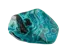

Correspondence Grimoire
Aura

MalachollaDefinition
The aura is an energy field of multiple layers surrounding all things. It may be seen visually or sensed psychically to be understood or manipulated in magic.
Auric Health
Gaps or holes in the aura can lead to illness. These can be healed through the use of crystals, or other energy-moving magics such as the passing of a healer's palms above the affected area.
Working with the Aura
Practitioners may learn to see or sense auras through practice and meditation. The aura's colors, brightness, and integrity can reveal information about a person's physical, emotional, and spiritual state.
Sensing Energetic Boundaries
Every person carries an energetic field that extends beyond the physical body. This field can be felt with practice, even without visual psychic ability. Begin by rubbing the palms briskly together for several seconds, then hold them a few inches apart and slowly draw them apart and bring them back together without touching. A subtle resistance, warmth, or magnetic sensation between the palms is the energetic boundary of the personal field making itself known.
Once that sensation is familiar, the same awareness can be extended outward to sense the fields of others. With a partner standing nearby, close the eyes and slowly move one hand toward them from a distance. Notice where a change in sensation occurs, where the air feels warmer, thicker, or charged. That boundary is the outer edge of their aura. With practice, the field becomes easier to perceive and the distinction between one person's field and another's becomes clearer.
Sensing the Auric Field of Objects
The aura is not exclusive to living beings. Crystals, plants, and other natural objects carry their own energetic fields that can be sensed through the hands. Hold a crystal in the non-dominant hand (the receptive hand), close the eyes, breathe slowly, and simply notice. Warmth, tingling, pressure, pulsing, or a sense of heaviness are all common responses. Some practitioners perceive colors or receive emotional impressions. There is no correct response; what is noticed is real information from the object's field.
Running the palm slowly over a crystal or plant without making physical contact can also reveal the shape and intensity of its field. Areas where the sensation intensifies indicate concentrated energy. Over time, this kind of sensing develops into a reliable tool for choosing materials for spellwork and attuning them to specific intentions.
Aura and Intention
The aura responds to thought, emotion, and intention. Stress, fear, and negative thought patterns cause the field to contract or develop weaknesses. Calm focus, loving attention, and clear intention cause it to expand and brighten. This is why energetic preparation, including grounding, centering, and emotional clearing, matters before spellwork: the practitioner's own aura is one of the primary instruments in any magickal working. Its condition directly affects the quality and reach of the energy being directed.